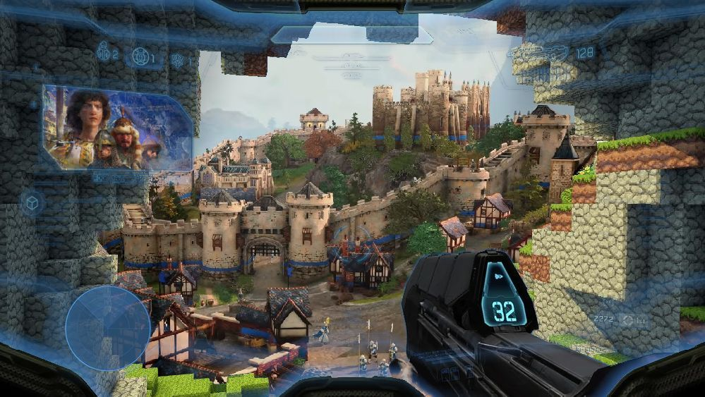

Game Engineering Leadership
Hands-on engineering leadership for games and real-time systems.
Experience spans engine architecture, animation systems, performance, and cross-platform delivery. Shipped work includes Halo, Minecraft, Age of Empires, Gears of War, and Kinect, with responsibilities ranging from core implementation to technical team leadership.
Exploring Technical Director and senior game engineering leadership roles.

Mobile · VR cross-platform delivery
Franchise experience
Halo
Minecraft
Age of Empires
Gears of War
Kinect
Selected shipped work
Projects at a glance.
Video frames identify each project at a glance, with motion when a card is active. Select a project for details about the role and technical contribution.
Skyling: Garden Defense imagery © Mighty Studios, LLC, used for portfolio discussion and promotion under its published permissions. Static images are frames from the motion excerpts supplied for this portfolio. All game names and trademarks belong to their respective owners; this independent portfolio is not endorsed by any publisher.
Working approach
A practical approach to technical leadership.
Stay close to the engineering work, make tradeoffs explicit, and give teams enough context to make sound decisions.
Frame and research the problem
Define goals, non-goals, stakeholders, constraints, and measures of success. Research the space before setting direction.
Innovate through collaboration
Experiment and prototype to uncover roadblocks, then work alongside the team on solutions. Document what matters and set clear direction.
Mentor and grow engineers
Empower engineers with ownership and mentoring, using each opportunity to build skills, confidence, and broader influence.
Instrument, measure, iterate
Establish healthy engineering practices and data-driven processes that improve quality through evidence and steady iteration.
Range of context
Experience includes focused strike teams, franchise engine groups, and central technology organizations. The approach changes with the team; the need for clear decisions and useful technical context does not.
Experience
Career history.
Roles across game art, engine and runtime programming, architecture groups, platform teams, and central technology.
Open the full resume-
2022–2026
World’s Edge
Lead Principal Software Engineer
Principal engineering lead for central technology, managing internal and external developers while remaining a primary contributor.
-
2017–2022
Mojang Studios
Principal Software Engineering Lead
Led engine and platform teams responsible for Minecraft Bedrock performance, integration, graphics, and cross-platform delivery.
-
2010–2017
343 Industries
Principal Software Development Engineer
Led animation engineering for Halo 4 and Halo 5 and served on the studio’s engineering architecture group.
-
2009–2010
Good Science · Microsoft
Principal Software Development Engineer
Led motion-driven interaction prototypes and software design for Kinect Adventures.
-
2007–2009
Microsoft Game Studios
Lead Software Development Engineer
Provided optimization and technical guidance to internal and external Xbox 360 teams.
-
2001–2007
Bungie
Programmer
Built animation systems, tools, and multithreaded engine infrastructure for Halo 2 and Halo 3.
-
1994–2001
Early career
Director of Technology · Lead Programmer · Programmer · Artist
Built proprietary 3D technology, networking and porting systems, real-time video software, and 2D game art.
Technical scope
Systems, platforms, and engineering practice.
Experience ranges from animation and multithreading to content pipelines, telemetry, cross-platform performance, and team leadership.
Languages & engines
Runtime systems
Delivery systems
Leadership systems
Book
Real-Time 3D Terrain Engines Using C++ and DirectX 9
Author · 2003
Book series
Game Programming Gems
Contributing author · Volumes 1, 2, and 3
Patents
Real-time human motion & gesture recognition
Credited on patents related to Kinect technology
Education
Bachelor of Fine Arts · Electronic Media
Northern Illinois University
Independent work
Independent work and ongoing experiments.
Mighty Studios is where game engineering, art, developer tools, electronics, 3D printing, robots, and playful experiments meet. Independent work keeps the feedback loop short and the craft personal.
Games & projects
Mighty Studios
Independent games and maker projects
Independent game
Skyling: Garden Defense
A colorful original game for PC and console
Developer tool
TurboPilot
A retro client for modern AI coding sessions
Hobbies & process
Mighty Workshop
Games, tools, AI, and experiments
Videos
Video Archive
Early demos and experiments
Contact